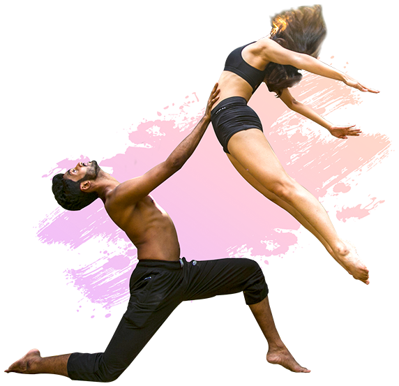
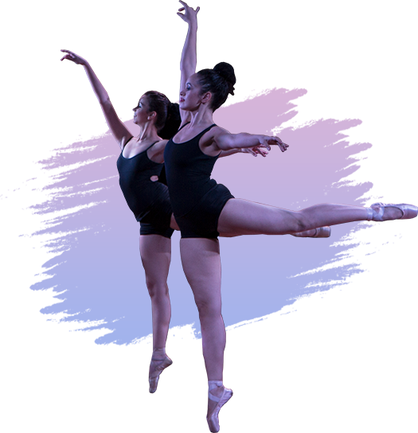
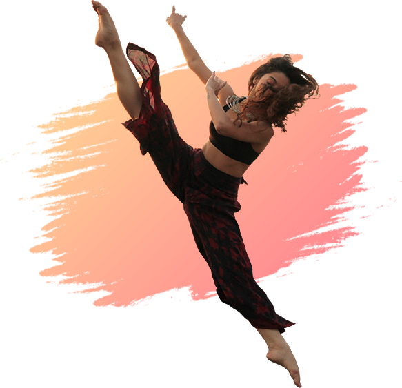
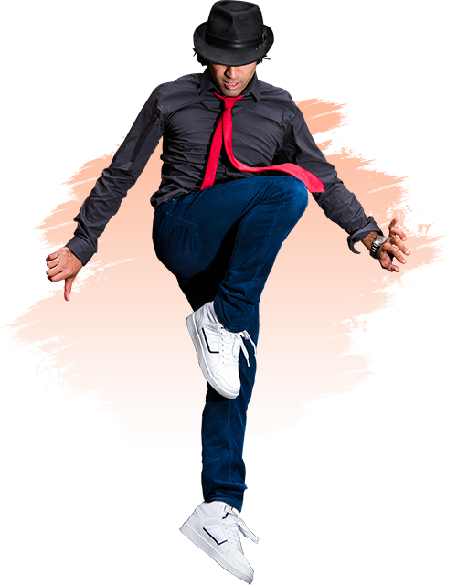

FOLLOW US ON
SOCIAL MEDIA


| TheDancex | Home | About | Styles | Contact | Sign In | Join Us |
|
JAZZ
Originally, Jazz dance referred to any kind of movements performed to jazz |
 |
|  |
BALLET
Classical Ballet developed in the late 19th century is known for its |
|
CONTEMPORARY
Contemporary dance is a genre of dance performance that developed |
 |
|  |
STREET
Street dance is choreography-oriented but is inspired by different street |
|
JAZZ FUNK
Jazz Funk dancing involves a fusion of styles, incorporating jazz roots into a |
|
|
|
|
FOLLOW US ON SOCIAL MEDIA
|
|
Subscribe to our Newsletter |
|
ABOUT TDX
Dancex comprises of |
NEW DELHI OFFICE
The Dancex, C-2, Creche Plot, |
MUMBAI OFFICE
The Dancex, |
QUICK INQUIRY
|